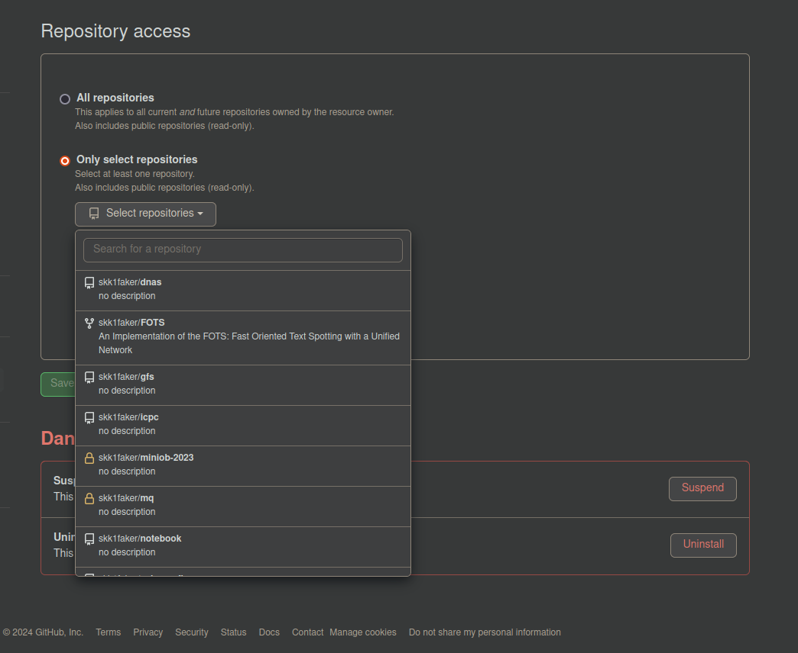

hexo评论系统
评论系统添加
主要思路是使用Utterances作为评论系统，通过使用github中的issue来添加评论。
github端配置
首先找一个仓库，用于存储评论，可以新建一个仓库专门做这个。本人使用博客源码仓库的issue作为评论区。注意这个仓库一定是public，否则无法公开
安装Utterances，安装地址为https://github.com/apps/utterances，直接点击install即可。
之后需要将这个app与仓库关联： 
hexo端配置
参考了两篇配置，这里使用了配置一
配置一：
所有配置均在/theme/next下
创建
theme/next/layout/_third-party/comments/utterances.swig1
2
3
4
5
6
7
8
9
10
11
12
13
14
15
16{%- if page.comments %}
<script>
NexT.utils.loadComments(document.querySelector('#utterances-container'), () => {
// if (typeof parcelRequire === 'function') { return; }
var js = document.createElement('script');
js.type = 'text/javascript';
js.src = 'https://utteranc.es/client.js';
js.async = true;
js.crossorigin = 'anonymous';
js.setAttribute('repo', '{{ theme.utterances.repo }}');
js.setAttribute('issue-term', '{{ theme.utterances.issue_term }}');
js.setAttribute('theme', '{{ theme.utterances.theme }}');
document.getElementById('utterances-container').appendChild(js);
});
</script>
{%- endif %}创建
theme/next/scripts/filters/comment/utterances.js1
2
3
4
5
6
7
8
9
10
11/* global hexo */
'use strict';
const path = require('path');
// Add comment
hexo.extend.filter.register('theme_inject', injects => {
let theme = hexo.theme.config;
if (!theme.utterances.enable) return;
injects.comment.raw('utterances', '<div class="comments" id="utterances-container"></div>', {}, {cache: true});
injects.bodyEnd.file('utterances', path.join(hexo.theme_dir, 'layout/_third-party/comments/utterances.swig'));
});修改
theme/next/_config.yml1
2
3
4
5utterances:
enable: true
repo: "username/repo_name" # 表示仓库位置
issue_term: "pathname" # 表示评论在issue中的表示形式
theme: "github-light" # 评论区主题修改
_config.yml注意一定要设置url，因为评论系统需要和github关联，在关联结束后会返回跳转到我们的主界面，需要使用url中的地址，这个地址直接写为博客地址即可。否则会4041
2
3
4
5
6
7
8# URL
## Set your site url here. For example, if you use GitHub Page, set url as 'https://username.github.io/project'
url: https://skk1faker.github.io
permalink: :year/:month/:day/:title/
permalink_defaults:
pretty_urls:
trailing_index: true # Set to false to remove trailing 'index.html' from permalinks
trailing_html: true # Set to false to remove trailing '.html' from permalinks
在这张图中，原url为example.com